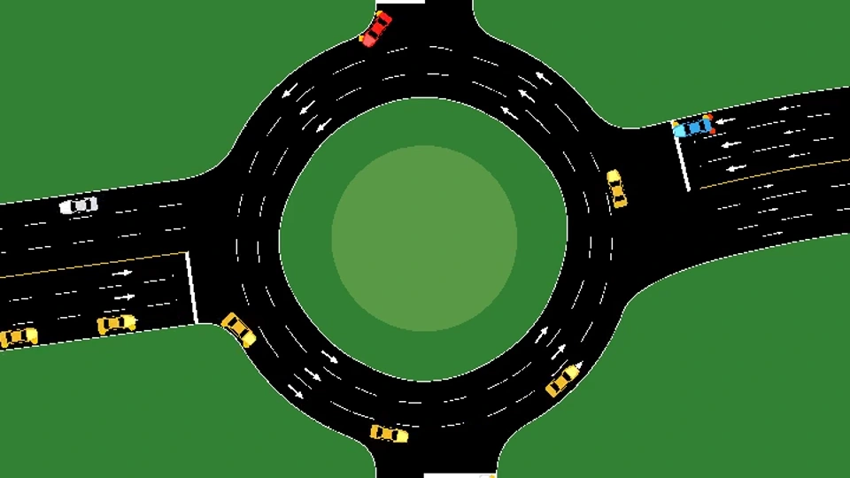
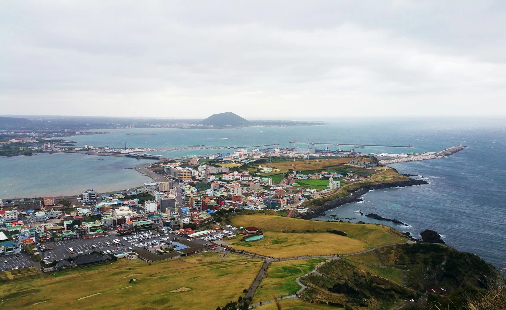
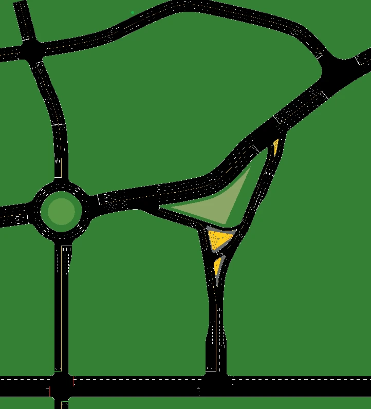
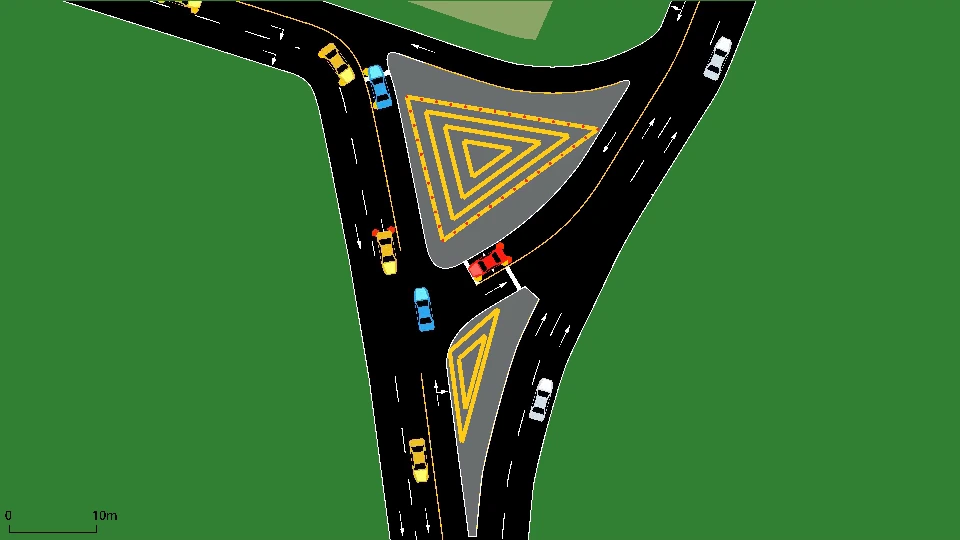
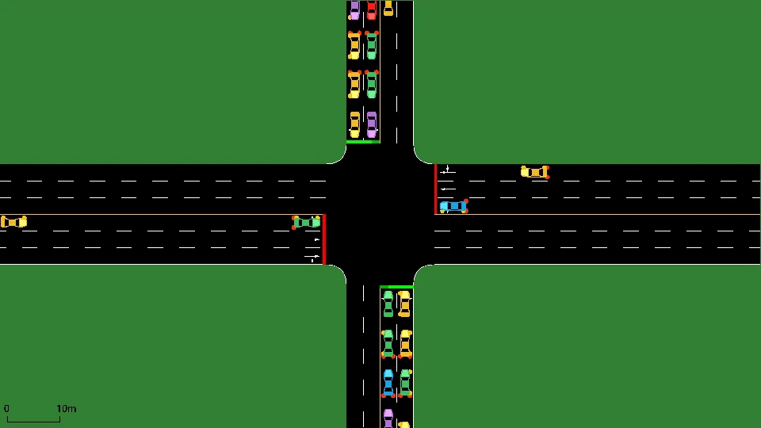
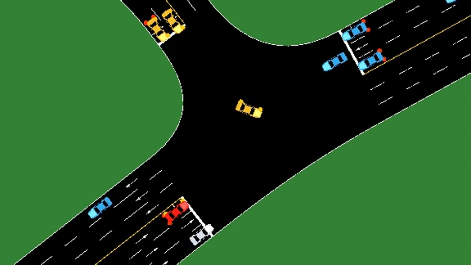
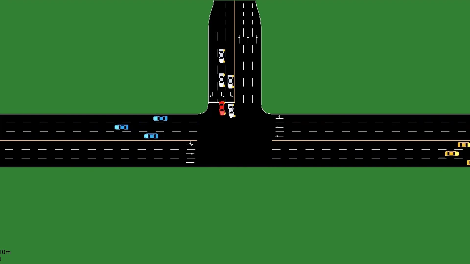

1Roundabout
Enter while considering gaps in circulating traffic.

JEJU, SOUTH KOREA · AUTONOMOUS DRIVING
We built a SUMO simulation of roads in Seongsan
to collect and analyze driving data under different visibility conditions.
WHY SEONGSAN
Tourism and travel demand Jeju welcomed around 2.24 million international visitors in 2025. In May, Seongsan Coast was the second most visited tourism block in Seogwipo. With Jeju’s second airport planned for Seongsan, travel demand in the area is expected to grow. [1]
Autonomous driving in tourist destinations Major tourist destinations such as Los Angeles already have autonomous ride-hailing services. [5] Seongsan also has an autonomous sightseeing bus service, Ilchulbong GO, connecting Seopjikoji, Phoenix Island, and the Seongsan Port area. [2] We used this local route as a reference for our SUMO road environment.

THE QUESTION
However, sea fog can reduce visibility on Seongsan’s roads. [3] From 2021 to 2025, Seongsan weather station recorded visibility below 1 km on an average of 16.8 days a year. [4] If an autonomous vehicle cannot see nearby traffic, how does that affect its decisions and driving performance?

[1] Report citing the Jeju Tourism Association: 2,242,187 international visitors in 2025 · Jeju Tourism Organization: Seongsan Coast visitor ranking, May 2025 · Ministry of Land, Infrastructure and Transport: Jeju Second Airport master plan, September 5, 2024
[3] Jeju Regional Meteorological Administration: Frequent fog in Jeju and its causes, July 5, 2011.
[4] KMA ASOS Seongsan station (188), hourly records for 2021–2025 Team calculation: 84 days had at least one observation below 1 km, averaging 16.8 days per year. These low-visibility records may include causes other than fog and do not represent vehicle detection ranges on the selected roads. Download annual totals (CSV)
[5] Waymo: Waymo One opens to all riders in Los Angeles, November 12, 2024
01 / DRIVING VIDEO

02 / ROAD ENVIRONMENT

Enter while considering gaps in circulating traffic.

Enter while maintaining space from nearby vehicles.

Respond to traffic signals and vehicles ahead.

Consider approaching traffic and right of way.

Turn left after checking crossing traffic.
We modeled selected sections of the sightseeing route with intersections, a roundabout, and entry roads. The simulated area covers only part of the full service route.
The final release will document background vehicle models, their proportions, inflow, traffic seeds, and traffic scaling. Evaluation focuses on interactions in which surrounding vehicles affect the AV's actions.
03 / LIMITED VISIBILITY
Observed vehicle Unobserved vehicle Ego vehicle
Observations include the ego vehicle, nearby and approaching vehicles, road geometry, route information, and signals. Detection ranges, missing-observation handling, and signal or V2I range limits will be documented in the final configuration.
The PPO policy selects one of nine combinations: acceleration commands of −4 / 0 / +3 m/s² and right / stay / left lane commands. Final reward terms and weights will be released once confirmed.
04 / THE DATASET
Separate simulator state from policy input
sₜ · oₜRecord selected actions and issued commands
aₜLog reward, motion, and terminal events
rₜ · eventsStore the next state and observation
sₜ₊₁ · oₜ₊₁Policy checkpoint · Traffic seed · Visibility condition
| Category | Recorded Fields | Purpose |
|---|---|---|
| Simulator State | Vehicle IDs, positions, speeds, lanes, headings, and true signal states | Reconstruct the environment |
| Observation | Policy input, detected vehicles, and observed signals | Inspect available observations |
| Action & Outcome | Commands, lanes before and after, reward, collisions, and arrivals | Connect decisions to execution |
| Episode End | terminated, truncated, and termination reason | Distinguish task termination from time limits |
Final episode and transition counts, visibility splits, and storage size will be published after collection. The course target of at least 10⁷ records will be reported separately from the achieved total, with the counting unit specified.
05 / RESULTS & ANALYSIS
| Visibility Condition | Completion Rate | Collision Rate | Violation Rate | Completion Time |
|---|---|---|---|---|
| Normal Visibility | — | — | — | — |
| Low Visibility | — | — | — | — |
Evaluation in progress
The baseline driving target is a collision rate below 5%, calculated as episodes with a collision divided by all evaluation episodes. We also check unexpected stops, route failures, timeouts, teleports, and simulator errors.
Case analyses will connect observed failures to their causes, changes, and reevaluation under the same conditions. Improvement claims will be added after validation.
06 / RESOURCES
Environment, policy, and setup instructions
Repository access may be required02 / PRESENTATIONPresentation draft
Commands use the provided W9 code. Run them from the final_project directory. Tested with SUMO 1.27.1 and Python 3.11.
pip install -r requirements.txt
python view_policy_gui.py --checkpoint checkpoints/seongsan_w9_3000k.pt --map pluslane_v4 --traffic 3